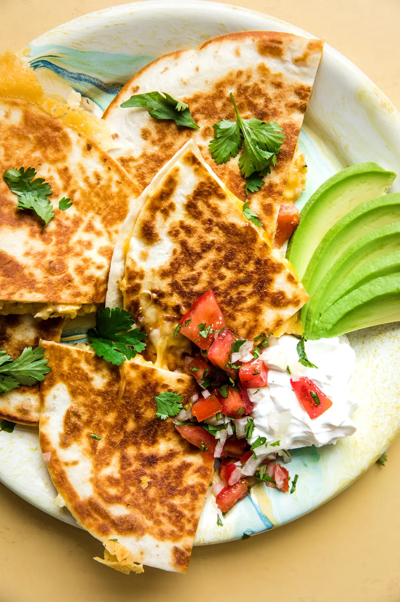

Breakfast Quesadilla

Description
Bacon-y, cheesy and perfect for topping with all of the Tex-Mex things, these breakfast quesadillas are our new AM favorite. Plus, they’re just about as easy to make for a crowd as for one or two, so you might as well make it a party! One of our favorite things about this breakfast quesadilla recipe is that it uses just one pan. Yep, breakfast for a big crew that only uses one, single pan. What more could a person wish for!? The quesadillas are full of everything you love about breakfast—eggs, cheese, bacon—and they’re just so easy to make. And if you’ve got a vegetarian in the mix, it’s easy to make one or two quesadillas sans bacon—no biggie—so it’s super adaptable, too.
Ingredients
- 12 oz bacon, cut into 3/4 pieces
- 8 large eggs
- 1/2 cup pico de gallo
- 3/4 tsp sea salt
- freshly ground black pepper
- 2 Tbsp butter, olive oil or reserved bacon drippings
- cooking spray, more butter or olive oil
- 6 oz cheddar, grated
- 6 oz freshly grated pepper Jack or Monterey Jack cheese
- 12(8-inch) flour tortillas
- 1 large avocado
- sour cream
- salsa
Steps
- In a large skillet set over medium heat, cook the bacon until crispy. Use a slotted spoon to
transfer the bacon to a paper towel-lined plate and pour off the excess grease into a
heatproof bowl. Wipe out the skillet.
- In a large bowl, whisk the eggs, 1/2 cup pico de gallo, salt and pepper together until smooth.
- Return the skillet to the stove over medium-high heat. Add oil, butter or reserved bacon
drippings. When the butter begins to bubble, pour the egg mixture into the skillet. Gently
push the eggs around the skillet with a spatula until they are almost set, but still a little
wet. Note: They will come together quickly in an already-hot pan set over medium-high heat,
so move quickly. Turn off the heat and transfer the eggs to a plate.
- While the eggs are cooking, crumble the bacon into smaller pieces, if desired.
- If you plan to serve these quesadillas all at one time, then you will need to keep them
warm as you cook them. Heat the oven to 200°F.
- To assemble the quesadillas, set a large skillet over medium-low heat. Spray the skillet with
cooking spray or add a little olive oil or butter. Put a tortilla in the skillet and add
2 tablespoons cheddar cheese, a layer of the cooked eggs, a layer of crumbled bacon and
finish with a layer of 2 tablespoons pepper jack or Monterey cheese. Top with a second
tortilla. Cook for 3-4 minutes on each side, flipping carefully, until the cheese is melted
and the filling is warmed through. Repeat with the remaining tortillas and ingredients.
- Place finished quesadillas on a baking sheet and place them in the oven to keep them warm.
- Slice the quesadillas into wedges and serve with avocado, sour cream and pico de gallo or salsa.